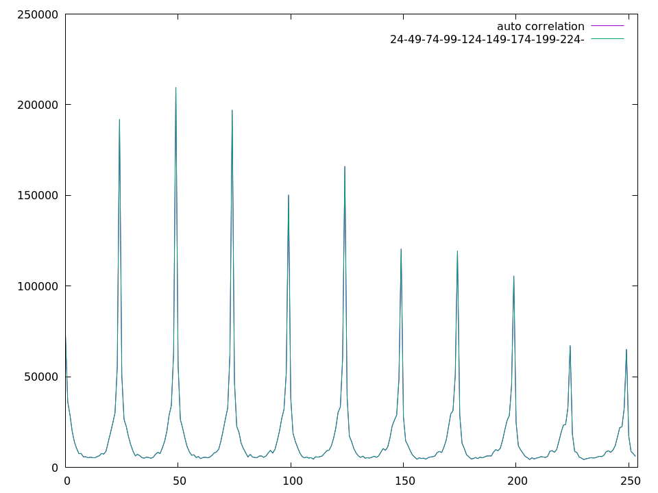
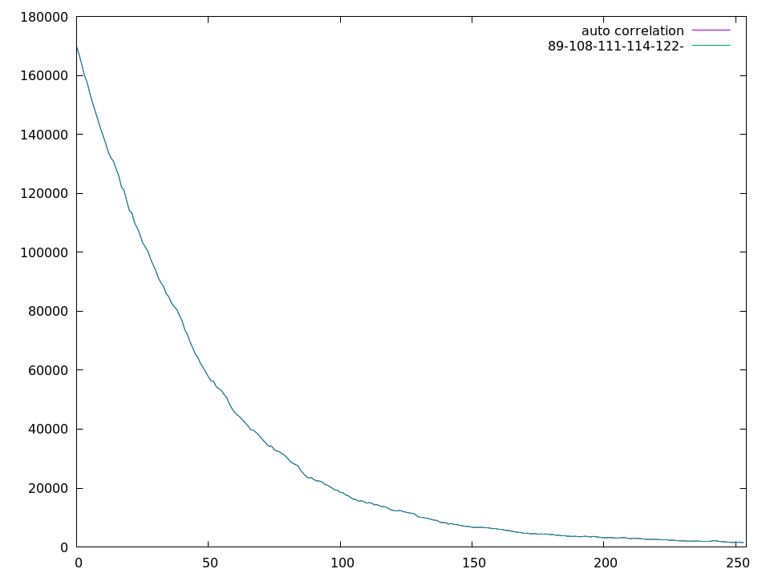
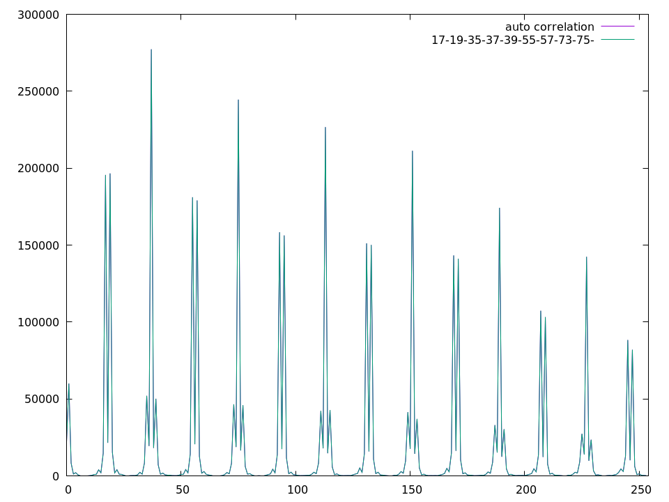

semaine9
1 Estimation du facteur de qualité d'une image
L'estimation se fait à partir des coefficients DCT d'une image décompressée, cela donne donc deux options :
- décompression de l'image puis DCT sur les blocs 8x8 (évite une recompression)
- compresser l'image à 100 et utiliser ces coefficients DCT
Nous allons ensuite tenter d'estimer la periode du signal (chaque coefficient), la période est l'entier avec lequel il a été quantifié. Pour cela nous allons calculer l'autocorrélation du signal et en détecter les pics, comme illustré figure 1.

Figure 1: Autocorrélation du coefficient DC avec les pics notés en haut à droite
La moyenne de la différence entre les valeurs consécutives des pics va nous donner la valeur avec laquelle le signal a été quantifié. Le facteur de qualité le plus probable est alors celui pour laquelle la distance entre la table (en prenant toutes les tables de quantification de 1 à 100) et l'ensemble des valeurs estimées est la plus faible. Bien qu'en théorie il soit mieux d'utiliser tous les coefficients, je n'utilise que les 4 premiers (dans l'ordre zigzag), la détection des pics de l'autocorrélation est grossière et sensible au bruit, et l'utilisation des autres coefficients va faire baisser la précision de l'estimation.
J'ai testé cette méthode sur l'arbre de phylogénie généré aléatoirement où les Qf des enfants sont plus petits que ceux de leurs parents, et pour toutes les images avec un Qf < 95, l'erreur moyenne de prédiction se situe entre 0.5 et 2 selon l'image choisie comme base de l'arbre. Le manque de précision pour les images avec un Qf >= 95 s'explique par le fait que le signal n'est pas suffisamment quantifié pour que des pics apparaissent dans l'histogramme des coefficients DCT et donc se répercutent dans l'autocorrélation (voir figure 2).

Figure 2: Autocorrélation d'un signal pas assez quantifié, les pics estimés sont completement faux
Cette méthode a été testée dans le cas où les Qf d'une image sont toujours plus petits que ceux de leurs parents. Les résultats sont corrects même si les Qf sont aléatoires, mais ils sont moins bons à cause du phénomène de double pics (voir figure 3) présent lorsqu'une image est recompressée avec un Qf plus important.

Figure 3: Autocorrélation d'un signal quantifié avec un Qf plus important, présence de double pics
2 DQ effect
Ces calculs sont issus de 1.
h1 = histogramme des coefficients DCT avant la première quantification
h2 = histogramme des coefficients DCT après la deuxième quantficiation
Imaginons qu'un coefficient DCT dans le bin u1 de h1 se déplace dans le bin u2 de h2
u1 après deux quantification = Qq1q2(u1)
Nous avons donc Qq1q2(u1) = \(\left [ \left [ \frac{u1}{q1} \right ] \frac{q1}{q2}\right ]\)
Rappelons nous que u2, q1 et q2 sont connus
Avant de tenter de borner u1, détaillons comment cette formule a été obtenue.
\(\left [ \frac{u_1}{q_1} \right ] \to première\ quantification\)
\(\left [ \frac{u_1}{q_1} \right ] \times q_1 \to déquantification\)
\(\left [ \frac{\left ( \left [ \frac{u_1}{q_1} \right ]\ \times\ q_1 \right )}{q_2} \right ] \to deuxième\ quantification\)
ou encore
\(u_2 = \left [ \left [ \frac{u1}{q1} \right ] \frac{q1}{q2}\right ]\) de manière simplifiée
Tentons maintenant de borner u1 pour savoir d'où vient u2
\(u_2 - \frac{1}{2} \leq \left [ \frac{u_1}{q_1} \right ] \times \frac{q1}{q2} < u_2 + \frac{1}{2} \to\) borne de la valeur entière
\(\frac{q_2}{q_1} \left ( u_2 - \frac{1}{2}\right ) \leq \left [ \frac{u_1}{q_1} \right ] < \frac{q_2}{q_1} \left (u_2 + \frac{1}{2} \right)\)
Il y a deux cas :
- q1 pair
\(q_1\left(\left \lceil \frac{q_2}{q_1} \left ( u_2 - \frac{1}{2}\right ) \right \rceil - \frac{1}{2} \right) \leq u_1 < q_1\left(\left \lfloor \frac{q_2}{q_1} \left ( u_2 + \frac{1}{2}\right ) \right \rfloor + \frac{1}{2} \right)\)
- q1 impair
\(q_1\left(\left \lceil \frac{q_2}{q_1} \left ( u_2 - \frac{1}{2}\right ) \right \rceil - \frac{1}{2} \right) + \frac{1}{2} \leq u_1 < q_1\left(\left \lfloor \frac{q_2}{q_1} \left ( u_2 + \frac{1}{2}\right ) \right \rfloor + \frac{1}{2} \right) - \frac{1}{2}\)
Le \(\frac{1}{2}\) vient du fait que l'on ne peut avoir que des valeurs entières puisqu'il s'agit d'indices de l'histogramme.
Les nombre de bins de l'histogramme original h1 qui contribuent à h2 est :
\(n(u_2) = q_1 \left(\left \lfloor \frac{q_2}{q_1} \left (u_2 - \frac{1}{2}\right) \right \rfloor - \left \lceil \frac{q_2}{q_1} \left (u_2 - \frac{1}{2}\right) \right \rceil + 1 \right)\)
À noter que \(n(u_2)\) est périodique, de période \(p = \frac{q_1}{gcd(q_1, q_2)}\)
Footnotes:
Z. Lin, J. He, X. Tang, C.-K. Tang, Fast, automatic and fine-grained tampered jpeg image detection via dct coefficient analysis, Pattern Recognition 42 (11) (2009) 2492–2501